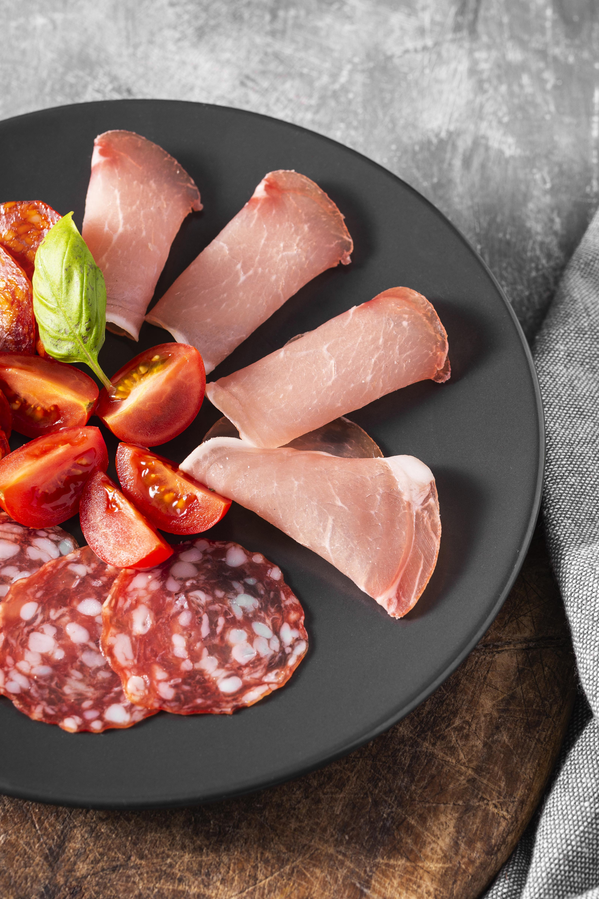
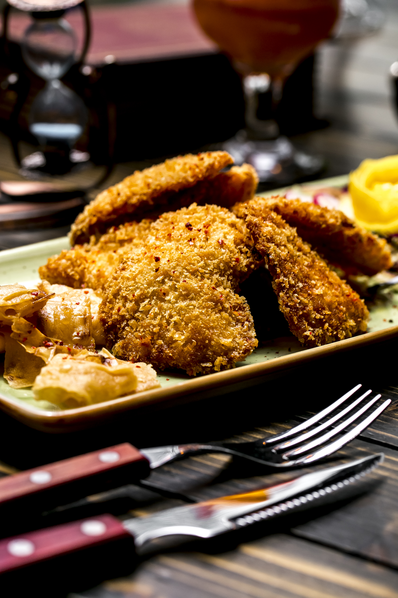
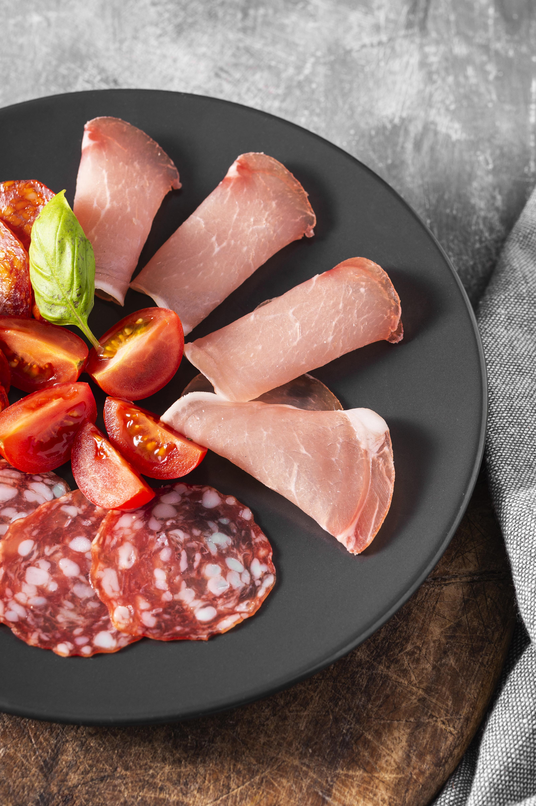
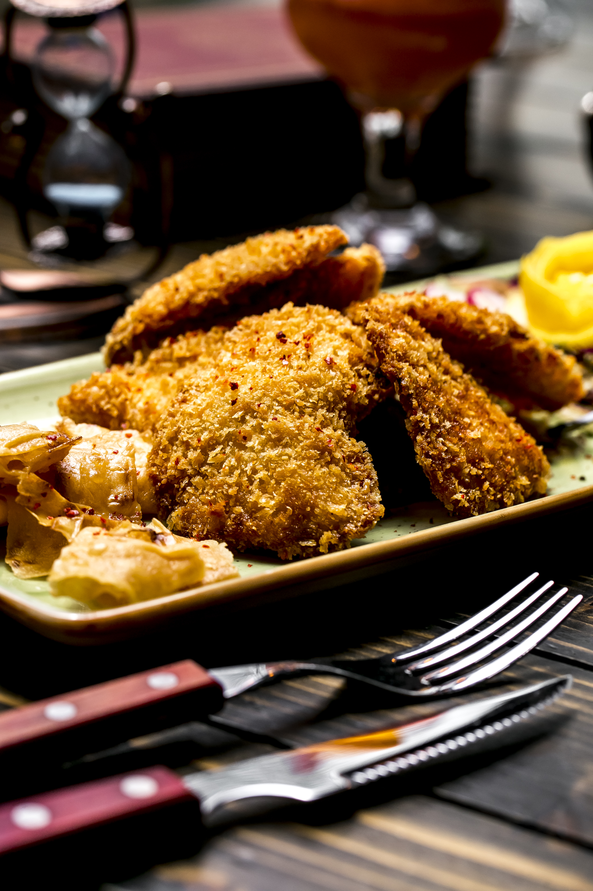
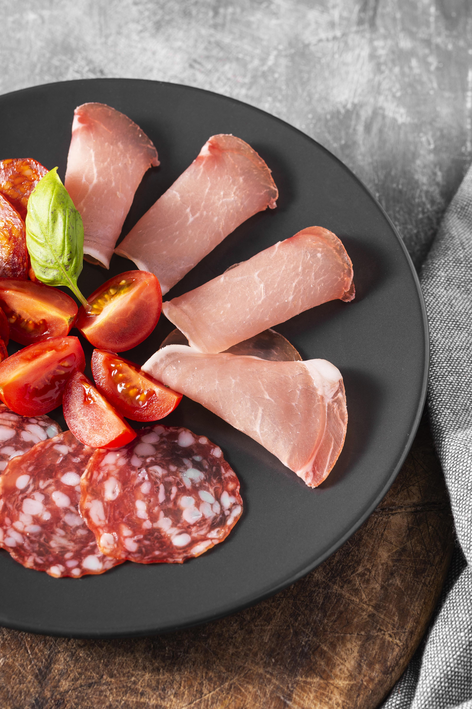
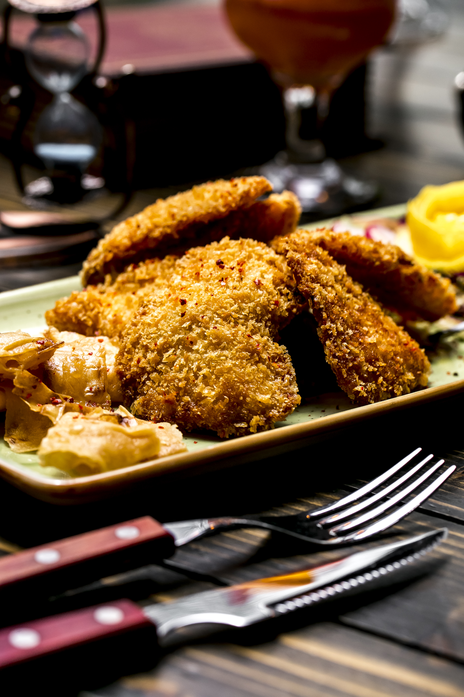

Morrisons sought a new brand identity for Savers, its lower price point range, known for delivering great value without compromising on quality. As a longstanding creative partner, we were tasked not only with the design and creative rollout, but also with the photography and retouch.

Our team of photographers, food and prop stylists created serving suggestions that appeal to the eye and to the appetite. By composing beautiful yet simple shots and introducing depth through lighting and colours, we elevated ingredients and demonstrated that value and quality can go hand in hand.


Recognised with Bronze Awards at both World Design Society and Vertex Awards in 2023

With teams working across multiple sets, ensuring a consistent look and feel was essential. Having been involved in the project from an early stage, we had a clear vision for the photography – from the big picture to the granular details – and this guided our approach, keeping everything on brand.

Carefully considered graphics, food styling and consistency enabled us to deliver on-pack creative that complemented the bold and playful redesign and showcased the uncompromising quality on offer across the Savers range.
The Savers project was incredibly satisfying to work on. While it may appear to be simple, cutout photography—especially in macro format—it leaves no room for error. Perfect lighting is essential, and our food stylists had to work tirelessly to create that enticing foodie vibe without any background to enhance the scene. The project’s success is a true testament to the team’s hard work and creativity.